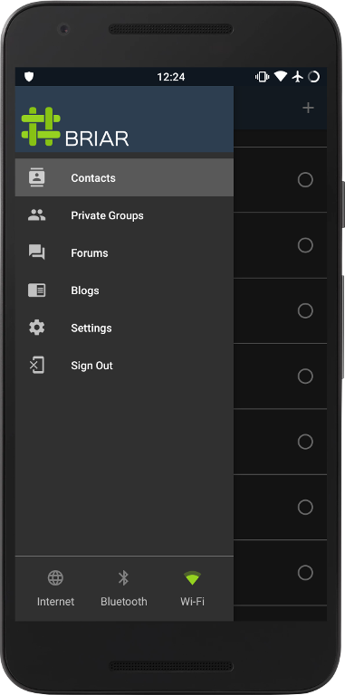

and
Secure Messaging
2019-06-28
https://eff.org/secure-messaging-scorecard
Metadata

former director of CIA and NSA

"We kill people based on metadata"Michael Hayden
former director of CIA and NSA

Secure messaging, anywhere
Protects metadata
Works without Internet
Thanks!